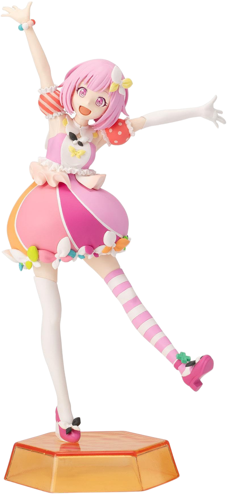
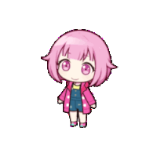
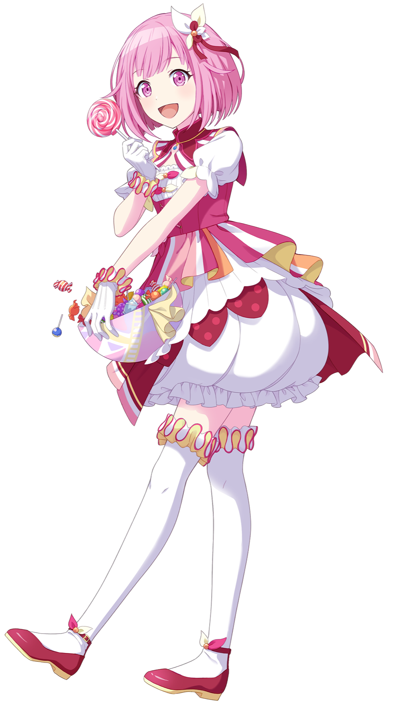
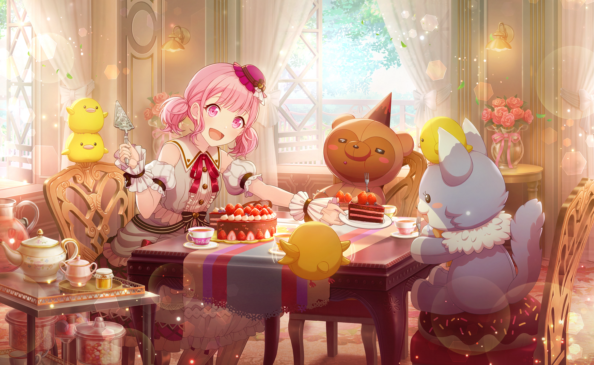
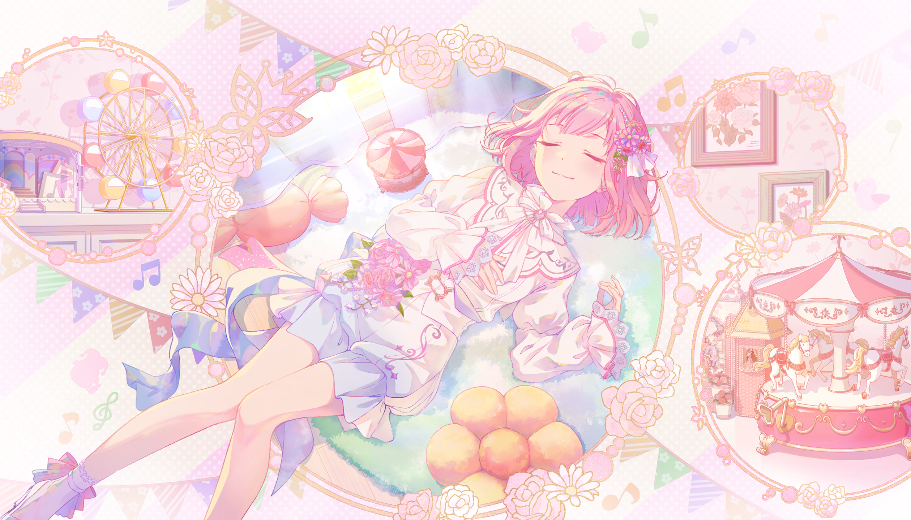
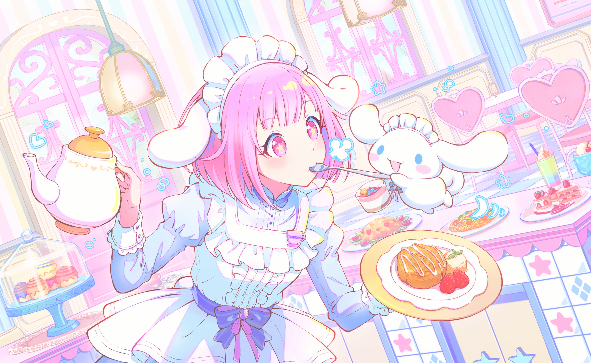

Emu Otori
鳳えむ
(Ootori Emu)
Personagem do elenco principal do jogo de ritmo Project Sekai: Colorful Stage, como parte do grupo de teatro Wonderlands×Showtime. Emu é uma garota energética, inocente e sonhadora, que tem como objetivo proteger o parque de diversões deixado por seu querido avô. É conhecida por seu uso de onomatopeias e sua frase icônica: “Wonderhoy!”
A Emu é minha personagem favorita do Project Sekai desde que conheci ela, na verdade ela foi um dos motivos de eu começar a jogar! Eu geralmente gosto de personagens rosinhas e fofinhas assim, mas com o tempo fui conhecendo ela mais profundamente e amando cada vez mais ela, inclusive me identifico bastante com várias coisas da sua personalidade e história. Ela me inspirou muito a me expressar mais e ser mais autêntica sem deixar o medo de ser julgada me impedir!!


| Gênero | Feminino |
|---|---|
| Aniversário | 9 de setembro |
| Altura | 1,52 m |
| Escolaridade | 2º ano do Ensino Médio japonês |
| Hobbies | Explorar a vizinhança |
| Talentos | Acrobacia e gostar de comer qualquer coisa |
| Comida favorita | Taiyaki |
| Não gosta de | Crepúsculo (pôr do sol) |
| Dubladora | Hina Kino |
"Um dia, eu quero fazer todo mundo nesse mundo sorrir!"





